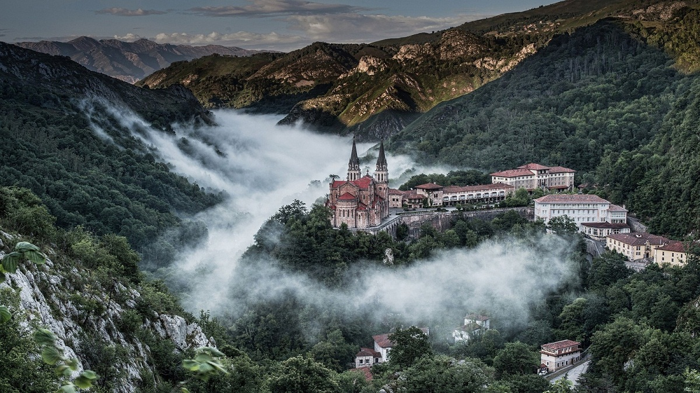

Covadonga (cooficialmente, en asturiano, Cuuadonga) es una es una parroquia del concejo de Cangas de Onis sita en el Principado de Asturias, España, así como la única población, con la categoría de lugar, de dicha parroquia.
La parroquia incluye el Real Sitio de Covadonga, con su Santuario, y forma parte del Parque Nacional de los Picos de Europa, y en sus 2.54 km2 habitan un total de 58 personas.
El lugar de Covadonga está a una altitud media de 257 metros sobre el nivel del mar, en la falda del monte Auseva y dista unos 11 kilómetros de Cangas de Onis
